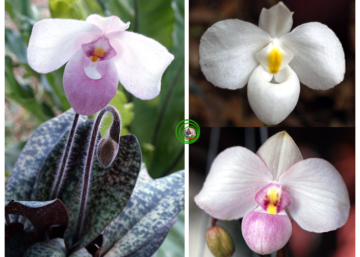
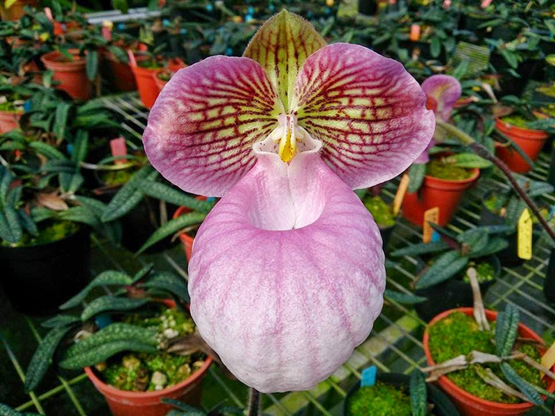

Cỏ lâu năm, có 5 - 7 lá thường mọc chùm. Lá hình thuôn - bầu dục, cỡ đến 11 x 4 cm, mặt trên loang lổ các khoang màu lục nhạt và màu lục thẫm, mép có lông ở gần gốc, mặt dưới màu vàng nâu với nhiều chấm hay khoang màu tía. Cuống cụm hoa dài đến 22 cm, thường mang 1 (- 2), rất ít khi 3 hoa. Lá bắc hình trứng - bầu dục, cỡ 1,2 - 1,5 x 1 cm, có lông ngắn. Hoa thường màu hồng nhạt với môi màu hồng tía hay tía - hồng, rộng đến 8 cm; dạng hoa màu trắng gặp rất ít. Lá đài ở gần trục hoa hình trứng, cỡ 1,7 - 3,5 x 1,8 - 2,5 cm; lá đài kia cũng hình trứng, cỡ 1,9 - 3 x 1,4 - 2,9 cm; cánh hoa hình bầu dục rộng, cỡ 3 - 4,2 x 2,4 - 3,8 cm; môi gần hình cầu, cỡ 2,5 - 3,8 x 2,5 - 3 cm, mép cuốn vào trong và có lông; nhị lép hình trứng, cỡ 1,4 - 1,7 x 1,3 - 1,6 cm, có lông mép; bầu dài đến 5,5 cm, có lông cứng và nhiều chấm màu tía.


2. Phân bố
Khánh Hòa (Khánh Vĩnh: sườn núi Hòn Giao) và ở ranh giới với Lâm Đồng.